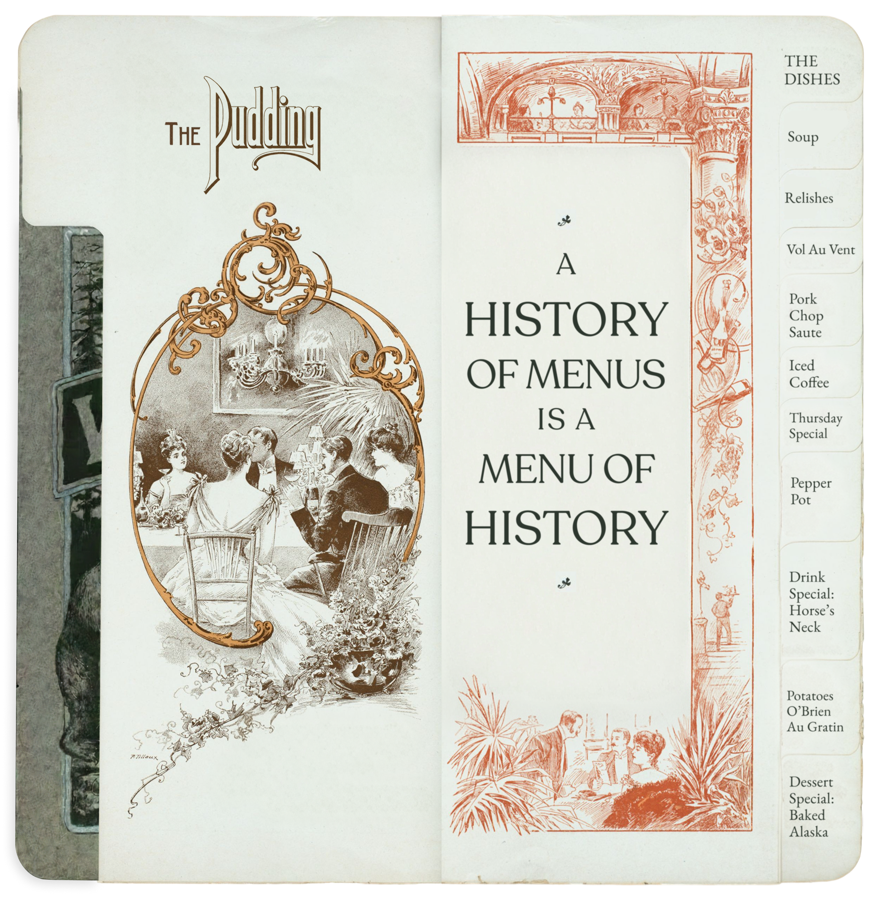
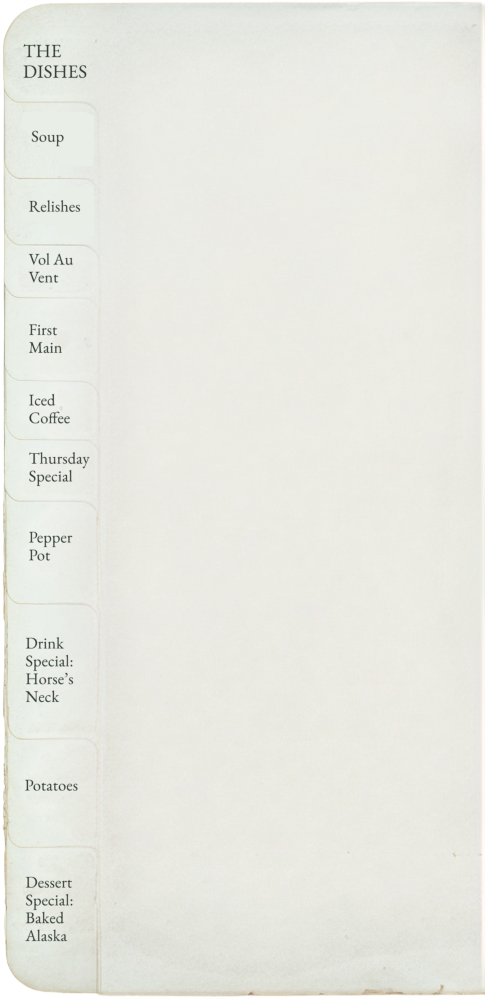
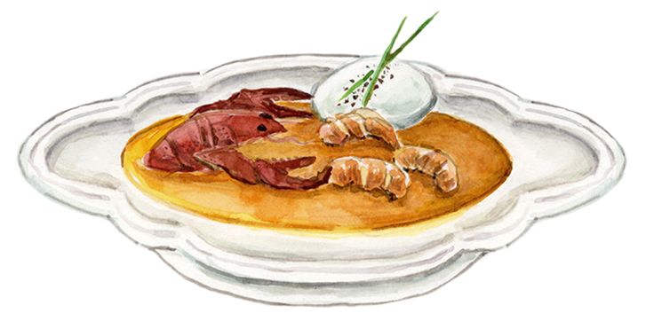
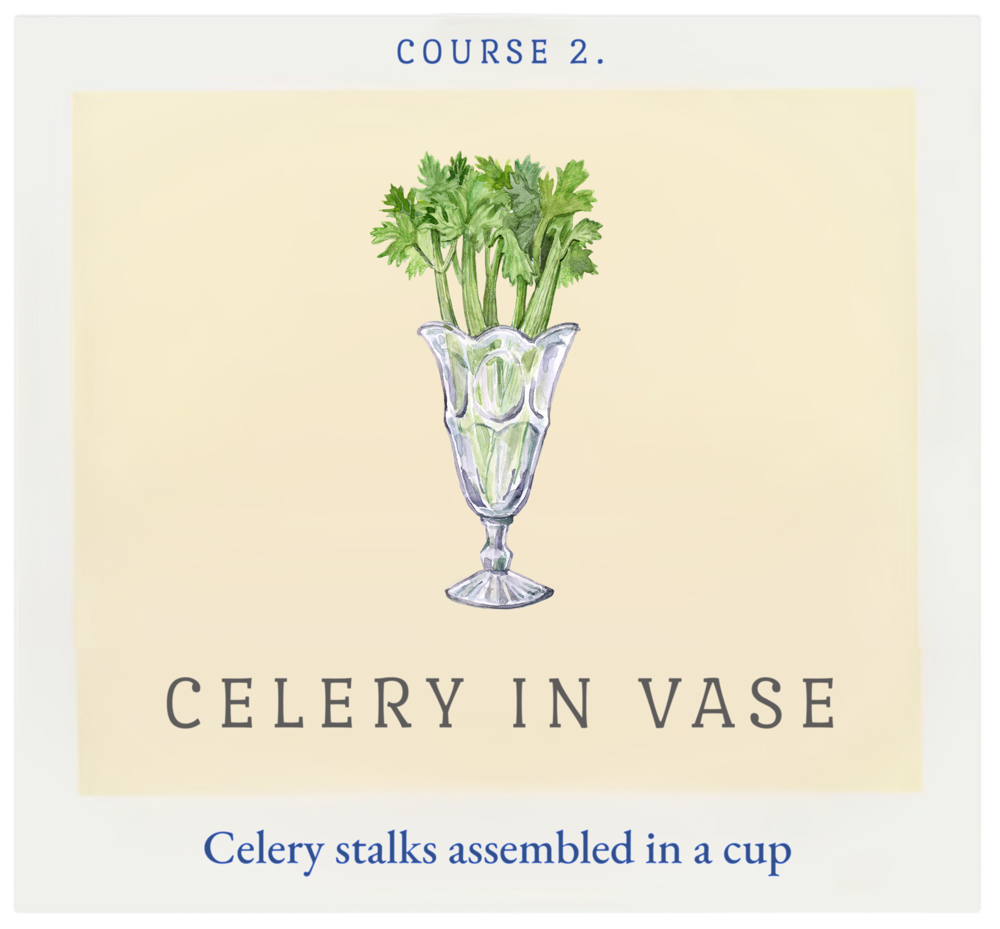
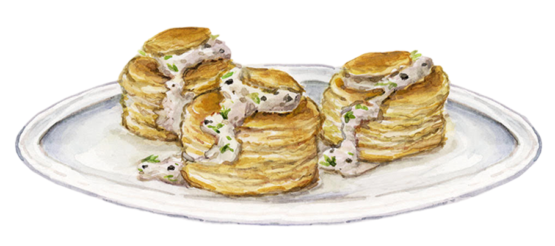
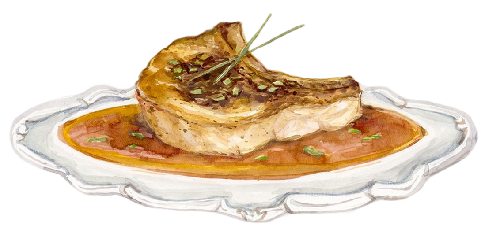
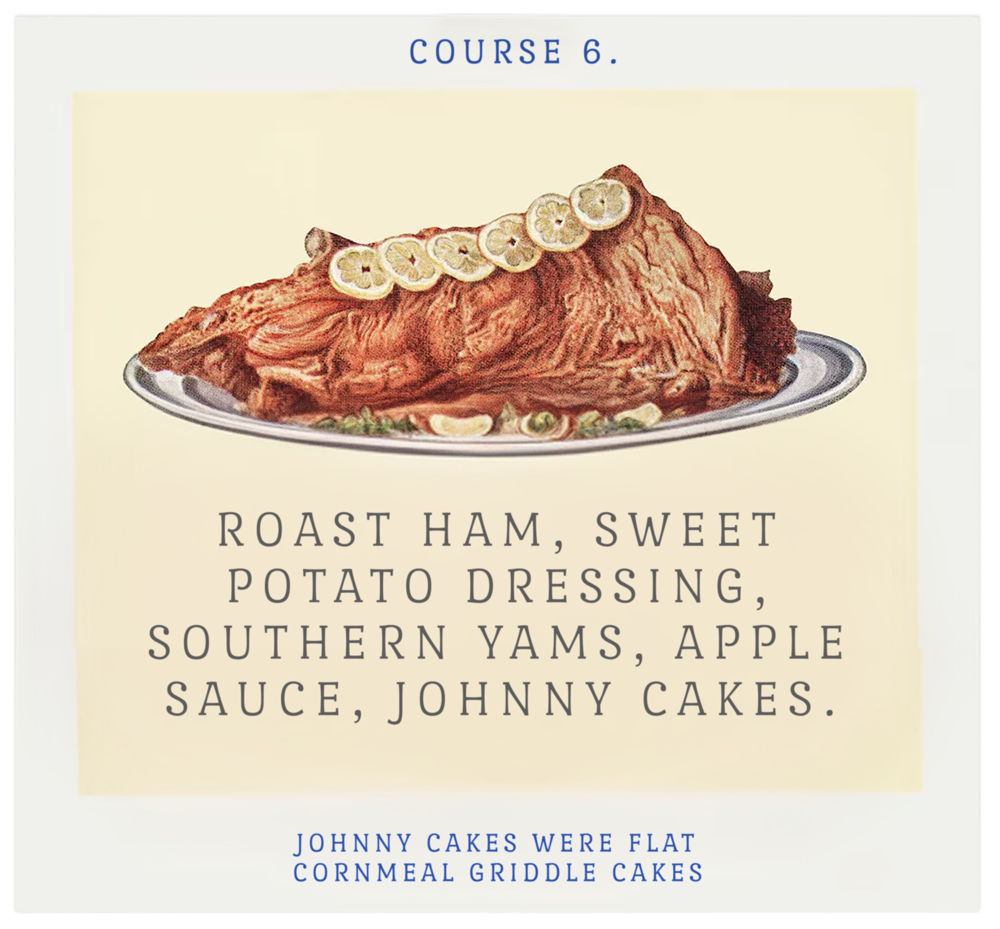
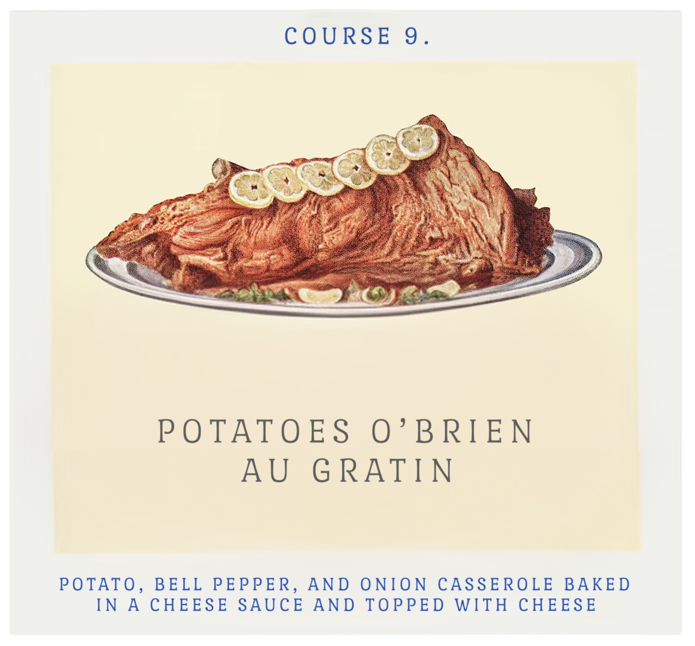
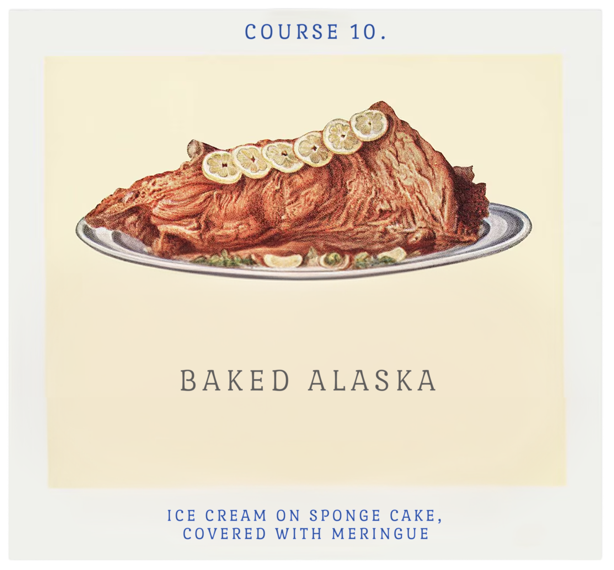

What do America’s earliest restaurant menus teach us about America?


swipe right to continue --> or use the keyboard
The New York Public Library has an archive of menus, primarily from 1880-1920, including some of the first menus to resemble modern-day restaurant dining.
Frank E. Buttolph (pictured here) spent decades assembling the menus as a record for future generations of the culinary and social history of her time.
A menu describes what a restaurant serves—but a menu also describes who is being served.
They reflect the class, gender, political, technological, and environmental shifts of history.
The thousands of menus in this collection document a period of fundamental transformation – and the birth of the society and the restaurant we know today.
I’ve searched through the archive to tell you that story in ten dishes. Your table is ready—right this way.

June 2026

Course 1

Bisque d’Ecrevisses
TK TK
Delmonico’s, NYC, 1881
We begin our historic meal with oysters, pardon me (in French)—huitres—and potages, the soup. The Consomme Châtelaine, a chicken soup, is an excellent choice but I suggest the bisque d’ecrevisses, a crayfish soup made with cognac and cream.
Soup was the first true course of the decadent meals at these restaurants, which would then proceed to 8, 10, or more courses of French classics or, possibly, other dishes simply given a European-sounding name.
Manhattan Club, NYC, 1866
Restaurant dining in America began in the 1830s. These were not taverns serving alcohol and hearty grub, but as spaces for culinary pleasure. By the late 1800s, they firmly catered to America’s new world elite, who sought to emulate what they believed was the height of culture: the European, and particularly the French, aristocracy.
Astor House, NYC, 1854, Printed on silk.
Accordingly, you will order your French bisque in French and your chef will have likely been imported from France—or at least somewhere over there. It will be 19th century America’s best possible imitation of the finest French cuisine.
Though restaurant dining is becoming more common among the wealthy in America, there’s little American about it.

Delmonico’s, NYC, 1900
After finishing your soup, feel free to reach out for a stalk of celery in a crystal celery vase. Celery was among a number of “relishes” that took a pride of place in the aristocratic menu and on the aristocratic table. In fact, it’s the fourth most common item among the Buttolph Collection menus, after only coffee, tea, and olives.
Alongside sorbets and punches inserted later in the meal as palate cleansers, celery functioned as part of an intricately ordered meal that distinguished the aristocratic restaurant as concerned more with the aesthetic than the practical.
Sherry’s, NY, 1891
George G. Foster, a writer at the time, noted that this kind of meal “is not merely a quantity of food deposited in the stomach, but is in every sense and to all the senses a great work of art.” Celery, like other delicacies of the time, was initially scarce enough to be considered a fine food, but later accessible enough to make that luxury a widespread cultural marker.
NY Board of Trade Dinner, Hotel Brunswick, NYC, 1887
Restaurant dining was one way the post-Civil War elite symbolically distinguished themselves from the masses. French was one aspect of gatekeeping—luxury was another.
In this menu from the Hotel Brunswick, celery appears as an hors d’oeurve and alongside canvasback duck. The canvasback was among the most sought after game in this period, partially because the duck’s favorite food was supposed to make it more delicious. That diet? Wild celery. Luxury upon luxury.

Delmonico’s, NYC, 1900
Speaking of rare meats: your third course: vol-au-vent of sweetbread a la toulouse, a pastry case filled with sweetbreads and a brown sauce, here paired with champagne at the “Ninth Annual Dinner in Honor of Crow Charlton” hosted at the Hotel Bellevue.
The American aristocratic restaurant of the late-1800s didn’t just serve food that paired complex cooking technique with decadent, luxury ingredients; it also publicly flaunted that decadence.
Hotel Bellevue, 1896, 9th Annual Honor of Crow Charlton
The public nature of this luxury was useful to differentiate the status and power of the elite: what they ate, how much of it, and with what customs and trappings.
St. Nicholas Hotel, Cincinnati, OH, 1895
To a certain extent, it also was unavoidable. In part, many of the elite restaurants at the time were in hotels that included room and board together, charging customers for a full menu with no à la carte option. Guests at the St. Nicholas, Hotel Colorado, or Laurel in the Pines, for example, would know that these dozen plus courses came standard.
St. Andrew’s Society Anniversary, Palace Hotel, SF, CA, 1896
Feasting in public also became more necessary. As industrialization offered employment to the lower classes beyond the domestic sphere, the elite lacked staff to host events themselves. Restaurants offered space for events of all kinds—community celebrations like this one, memorials, club meetings— offering the elite another space to see and be seen.
Dinner, Friends of William Clauss, The St. Nicolas Hotel, Cincinnati, OH, 1908
Back at the St. Nicholas, for example, one William Clauss was just hosting a dinner for his friends.

Union Hotel, NYC, 1900
We hope you enjoyed that vol au vent – and America’s elite surely had – because American restaurant dining is headed somewhere new.
“Pork Chops Saute, Sauce Robert” feels like a fitting next course: a traditional French sauce, sure, but some American is starting to come through.
The century is turning over, and so is the menu: dishes are mostly in English, there’s a price attached, and it’s one of a number of à la carte options. The menu even warns that some dishes may take 15 minutes more to prepare!
Waldorf-Astoria, NYC, 1897
Our menus are following that same general structure from oysters to coffee, but they’re noticeably more complicated…
English/French menu versions, Delmonicos, NYC, 1917
…and noticeably more English-friendly.
Elite dining is changing – because restaurant dining is being transformed by everyone else.
Hamblen’s Restaurant, NYC, 1900
Here’s an iced coffee, on the house. That’s a nice thing now and a real splurge if it’s the hot spring of 1900, when ice was still cut and shipped to cities from frozen lakes and rivers. The American Ice Company had just formed a monopoly in the city, doubling its rates and cutting deliveries in order to juice profits.
Putnam House Hotel, NYC, 1900
It didn’t last long: an outcry by a new, burgeoning class of workers and consumers who forced the company to resume normal business.
More broadly, this force was at the center of a broader transformation of American industry, American dining, and American society. This force, the new middle class, first broke open restaurant dining into new forms beyond the aristocratic table and then forced the creation of something entirely new.
Into the early 20th century, industrialization produced a working middle class who desired more than old taverns and dives.
At the same time, the technological innovation transforming the labor market also made it cheaper to produce, transport, and preserve food.
Andrew P. Haley writes in Turning Tables: Restaurants and the Rise of the Middle Class, 1880-1920“The collective purchasing power of the emerging middle class encouraged restaurant entrepreneurs to cater to their tastes, and, over the course of forty years, small preferences about how to dine begot cultural changes that eventually birthed both middle-class restaurants and the modern middle class itself.”
Putnam House, Table d’ Hote, NYC, 1900
From 1880 to 1920, the number of professional occupations doubled, as did the percentage of Americans working in management. At the same time, employment in the dining industry grew 400%.
In this explosion, the American restaurant didn’t just appear as an answer to the aristocratic restaurant model – it had evolved out of a host of other models of dining that emerged in between.
Pure Food Cafes, NYC, 1900
Table d’hote menus offered a selection of dishes at a fixed priced that mimicked the coursing of a fine dining restaurant, but with less luxurious ingredients and a more affordable price. As in this menu from the Putnam House, these places attempted to be “American” while also evoking the abundance of elite dining.
Walton’s Old Homestead Oyster and Chop House, NYC, 1914
The beefsteak or chophouse were, as it sounds, a place to find meat. The New York Times described, in 1881, how all kinds of men could be found here: “the tables were full, and the customers were of all sorts and kinds – well dressed people, evidently with plenty of money in their pockets, market-men, countrymen, clerks, store boys – a regular gathering of clans scattered at Babel.” And these restaurants offered just as many ways to eat meat.
Child’s Lunch Rooms, NYC, 1901
Lunchrooms offered somewhat lighter fare for a broader audience. The counter was often saved for men, sure, but there was also a dining room for couples and families. They offered diner-sized menus with plenty of options “ready” to eat – or available to go – for folks hurrying back to work.
Dennett’s Surpassing Coffee, NYC, 1900
Finally, at coffee and cake saloons, women could find cakes, ice creams, and light lunches – without the expectation of a male dining companion.
Regal Bakery & Restaurant, NYC, 1919
In each of these establishments – and in restaurant dining, generally – menus from the beginning of the 20th century show major departures from the menus of just a few decades earlier. Nevermind public displays of wealth – there was now a whole new public to serve.

Hotel Princesa Café, NYC, 1914
From all those experiments, the full American restaurant – a place that offers everything to everyone – starts to take shape. It’s a place where you can even get your whole meal on one plate, like the Thursday special at the Hotel Princesa Cafe and Restaurant.
It’s normal today for a menu to offer specials or combination plates where a main comes with sides, but it was a restaurant breakthrough at the time. It signified that while diners surely wanted to eat out to enjoy it, they also demanded that it met their practical needs: balanced, affordable, and efficient.
Hotel Princesa Café, NYC, 1914
New diners, new types of restaurants, new ways of eating all called for new kinds of menus in the first decades of the 20th century. And, often, menus that had a lot more information about what restaurants and restaurant dining ought to be.
At the Princesa, there are more words used on prose about dining than there are spent on dishes to order. Here and elsewhere, restaurateurs were speaking to a new cohort of diners – telling them why to come, who to pay, where to sit, and what’s available when.
Adams' Restaurant, NYC, 1914
The elite European menu took hours: the middle-class restaurant understood that busy workers wanted a good deal and a complete meal in a fixed amount of time, that a new wave of shoppers could also be convinced to stop for a meal among their errands.
Café Savarin, NYC, 1915
When Café Savarin opened, in 1888, the Times wrote that “the best corps of cooks and waiters Paris could afford has been secured” to serve the french menu.
By 1915, the menu offered dishes drawing on French, German, Italian, Hungarian, British, Indian, Japanese, and Caribbean cuisines.
It feels right to try the Pepper Pot here – a dish with origins in West Africa, transformation in the West Indies, and another evolution in the United States.
Rathskeller, NYC, 1914
Middle-class diners didn’t just want riffs on the fancy French restaurant or better versions of the old taverns – they wanted something else to eat, too.
By the early 1900s immigrants had established significant enclaves in American cities, bringing their food cultures with them. The emerging middle class living or working in those cities saw this culinary diversity as a source of national pride, immigrant entrepreneurship as a symbol of American accomplishment.
The Syrian Restaurant for Ladies' & Gents, NYC, 1917
Italian and German restaurants were early challengers to French dominance over dining, but middle class diners also found that there were already also a glut of restaurants serving local immigrant populations that would be happy to take their business, too.
The specific offerings depended on the city, but diners started to bring their money and demands to, say, Chinese, Russian, or Syrian restaurateurs, too.
Tokio Restaurant, NYC, 1914
Even if these places were a little unfamiliar, they were more accessible than the old aristocratic restaurants: these businesses actually wanted to accommodate the middle classes.
Some restaurants, like the Tokio Restaurant, even offered split menus that offered all the American classics as well as food from a particular cuisine.
Healy’s Forty Second Street Restaurant, NYC, 1917
This “cosmopolitan” trend wasn’t limited to ethnic restaurants – restaurants of all kinds started to serve dishes that were, or at least pretended to be, from foreign lands.
Then, as now, Americans embracing foreign food was fully compatible with racism and xenophobia. Nonetheless, whether as authentic inclusion or more cynical exoticism, these diners rejected expertise in French gastronomy in favor of the worldliness they attributed to eating expansively.
R.H. Macy and Co., NYC, 1917
Why not wash that down with a “Horse’s Neck”? While the drink later added alcohol, it originated as a mix of ginger ale and a long curling lemon rind, one of many new booze-free options appearing on menus in the early 20th century.
The beverages offered on these menus suggests the clientele had changed from a bit from those feasts accompanied solely with wine, liquor, and mineral water. Now diners had work to do, appearances to keep up, or, well, just be children.
Joe's Restaurant, Brooklyn, NY, 1920
While ethnic food didn’t fix racism in America, dining in America did diversify across age and gender in this era. Aristocratic French restaurants had once been the province purely of men; later, lunch counters and other new type of eateries segregated the sexes. But as the new century progressed, restaurants not only shifted to mixed gender dining rooms they also began to cater to entire families.

Dinner to the Directors of Metropolitan Life Insurance, Metropolitan Club, NYC, 1921
Of course the rich were still eating out all this time, too.
Into the first decades of the 20th century, the elite were still hosting luxurious banquets with coursed menus. Social transformation is slow.
The Portland, 1921
But in some fancier restaurants, the menu might look a lot more like how the middle-classes were transforming restaurant dining.
English, a la carte menus with prices, combination plates, and even music – formerly scorned as interference in the true focus of dining.
Rector’s, Chicago, IL, 1906
Just as middle-class restaurants offered customers a variety of options to meet their desires, some elite restaurants confronted the newly crowded restaurant market with a new take on abundance. Rector’s, in Chicago, had a dizzying selection for every section – including 25 kinds of potatoes. Potatoes O’Brien Au Gratin feels like a fitting choice for the mashed-up moment.

Fleischmann's Vienna Restaurant, NYC, 1917
Of course, we have to get dessert – and we’ll be having baked alaska.
It’s not among the forty plus desserts on offer at Fleischmann’s – advances in artificial refrigeration made all kinds of sweet cold treats much easier – but I know a place where we can still get one…
Fleischmann's Vienna Restaurant, NYC, 1917
Even though the science of nutrition that emerged in the early 20th century pushed many diners away from extravagant meals, dessert obviously stuck around.
In fact, if you visit Delmonico’s today, the menu has changed a bit – there’s yellowtail crudo, a burrata, sichuan peppercorn sauce, a cocktail with pandan. But you can also still order a baked alaska, invented there in 1867.
Fleischmann's Vienna Restaurant, NYC, 1917
Restaurant dining in America was once an imitation: wannabe aristocrats attempting French feasting. But as the 19th became the 20th century, the American middle class and the true American restaurant emerged: diverse, accessible, opinionated, at times chaotic.
Fleischmann's Vienna Restaurant, NYC, 1917
And that was before the rise of fast food a few decades later, revolutionizing American dining yet again.
Today’s menus show all of those influences: the oysters that still start many a meal, value meals and combinations, “fusion” and Americanized foreign cuisines, family-style dining,
But the fundamental break away from the old European style happened in the years Frank Buttolph collected all those menus. Maybe you’ll find some intriguing artifacts yourself. We’ve collected 5000 menus for you. Right this way:
swipe
01 / 56